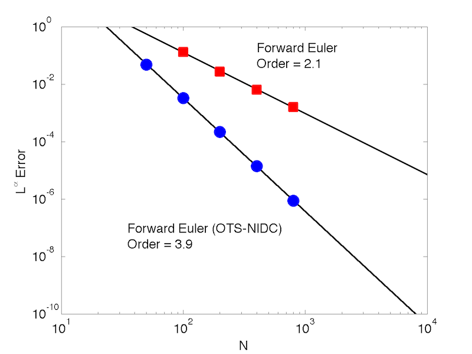

An amazing (but straightforward) implication of Taylor series analysis of errors of finite difference approximations is that the accuracy of common finite difference schemes for time-dependent PDEs can be boosted above the formal accuracy by using an optimal time step (OTS) and applying a non-iterative defect correction (NIDC) {% cite 2011-Chu-AMC %}. A key consequence of this result is that it may be possible to transform formally low-order accurate finite difference schemes into high-order accurate numerical methods with very little modification of both the original numerical algorithm and software implementation.
MATLAB code for all of the examples is available below.
For a variety of time-dependent PDEs, OTS + NIDC can be used to design finite difference schemes with higher than expected convergence rates. Examples include:
The figures below show finite-difference solutions to the 1D viscous Burgers equation $$ u_t + u u_x = \nu u_{xx} $$ using standard second-order central difference approximations for the spatial derivatives and simple forward Euler time stepping with (left) and without (right) optimal time step selection and non-iterative defect correction.
Numerical convergence studies demonstrate the expected convergence rates (left) and relationships between computation time and $L^\infty$ error in the solution. Observe that OTS + NIDC leads to effective fourth-order accuracy in $\Delta x$ even though the finite difference scheme is formally only second-order accurate in $\Delta x$. The time step size $\Delta t$ does not affect the accuracy because the stability constraint requires that $\Delta t = O(\Delta x^2)$.
OTS + NIDC is not limited to low-order partial differential equations. However, higher order stencils are required for fortuitous cancellation of higher-order errors.
The figures below shows finite-difference solutions to the 1D fourth-order parabolic equation $$ u_t = - \kappa u_{xxxx} + f(x, t) $$ usingNumerical convergence studies demonstrate the expected convergence rates (left) and relationships between computation time and $L^\infty$ error in the solution amongst a collection of common finite diffence schemes.
It is interesting to observe that the schemes based on Crank-Nicholson time stepping require less computation than OTS + NIDC. However, round-off error limits the accuracy achievable by both Crank-Nicholson methods (due to the linear solve required at each time step). OTS + NIDC does not suffer from the same accuracy limitation (but suffers from the stringent stability constraint $\Delta t = O(\Delta x^4)$ constraint).
The figure below shows convergence rates of finite-difference solutions (with and without OTS + NIDC) to the second-order wave equation $$ u_{tt} = c^2 u_{xx} + f(x, t) $$ solved using the Kreiss, Petersson, and Ystrom scheme (2002).
OTS + NIDC leads to effective fourth-order accuracy in $\Delta x$ even though the finite difference scheme is formally only second-order accurate in $\Delta x$. The time step size $\Delta t$ does not affect the accuracy because the stability constraint requires that $\Delta t = O(\Delta x)$.
OTS + NIDC is suitable for PDEs in multiple space dimensions and on irregular domains. However, achieving a boost in accuracy typically requires careful choice of the
Numerical convergence studies demonstrate the expected convergence rates (left) and relationships between computation time and $L^\infty$ error in the solution. Again, we see that OTS + NIDC leads to effective fourth-order accuracy in even though the finite difference scheme is formally only second-order accurate in $\Delta x$ and that the time step size does not affect the accuracy because the stability constraint requires that $\Delta t = O(\Delta x^2)$. The figures below are specific to the solution on the starfish-shaped domain.
OTS + NIDC can be extended to boost the accuracy of variable coefficient time-dependent PDEs by (1) optimally choosing the numerical grid and (2) using divided difference stencils that are the natural generalization of standard uniform-grid stencils {% cite 2009-Chu_Lambers-ICAEM_WCE %}. The figures below shows convergence rates of finite-difference solutions to the second-order variable-coefficient wave equation (left) $$ u_{tt} = c(x)^2 u_{xx} + f(x, t) $$ solved using the Kreiss, Petersson, and Ystrom scheme (2002) and the variable-coefficient diffusion equation (right) $$ u_t = (D(x) u)_{xx} + f(x, t) $$ solved using a second-order finite difference scheme based on divided differences.
In plots for the variable-coefficient diffusion equation, FE is shorthand for forward Euler time integration.